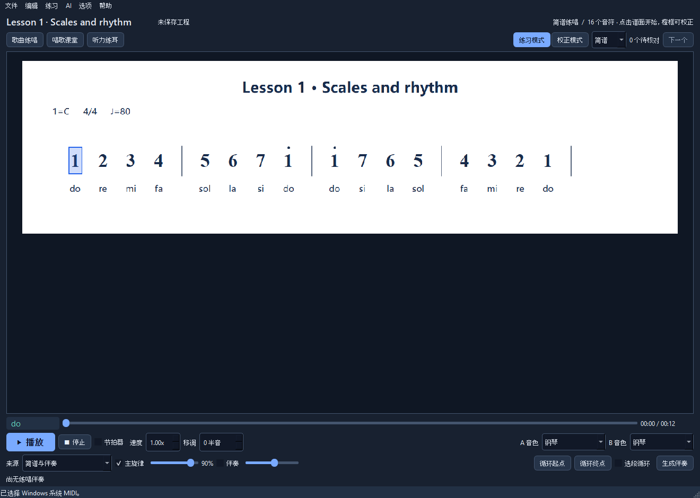

A Windows app for singing practice
Play the score.Practise the song.
Bring in a score. Check the notes. Slow it down, loop the awkward passage, and sing along.
Open source · MIT · Windows 10 / 11

From a score to a rehearsal
Three things to do before the next take.
Bring in the score
Open a numbered-notation image, a staff-notation image, or MusicXML. Start with a built-in exercise if you just want to try it.
Check what it read
Keep the source image in view and correct the notes. Recognition gives you a draft; complex rhythms and multiple voices still need a careful look.
Make it comfortable
Set the tempo and key, mark a phrase, then repeat it. Save a JPP project so the corrected score is ready next time.
On the music stand
The controls you reach for during practice.
No need to prepare a different recording for every tempo or key.
- Playback that follows you
- Tempo, transposition, phrase loops and a metronome. Hear the piano or choose from 128 General MIDI instruments.
- Room to correct the score
- Original-image comparison, multiple pages and note editing. Numbered notation, staff notation and MusicXML all have a place.
- A starting point for singing
- Built-in lessons, lyrics and microphone-based practice feedback. Begin with scales and rhythm, then use your own material.
- Keep the work you've done
- Save projects as JPP, recover autosaved work, and export synthesized practice audio as WAV.
Try the source version
Available on GitHub.
The public source is available now. A Windows installer has not been released yet.
Build on Windows
Visual Studio 2026 with Desktop C++ tools, CMake 3.30+, PowerShell 7 and Python 3.12+.
Extract the source, open PowerShell in that folder, and run:
pwsh -NoProfile -File scripts/setup.ps1Read the build guideA few practical details.
What is included in the core package?
The desktop app, piano sound bank and native staff-recognition tools. Vocal separation and lyric transcription are optional local components, not part of the core package.
Can I add another interface language?
Yes. Add a translated language directory next to the executable and restart. Language packs are external files, so the app does not need rebuilding.
Language pack formatCan I work on the code?
Yes. The application is C++20 with Qt 6 and is licensed under MIT. Build instructions, the project format and contribution notes are in the repository. Third-party resources retain their own licenses.
Contributing